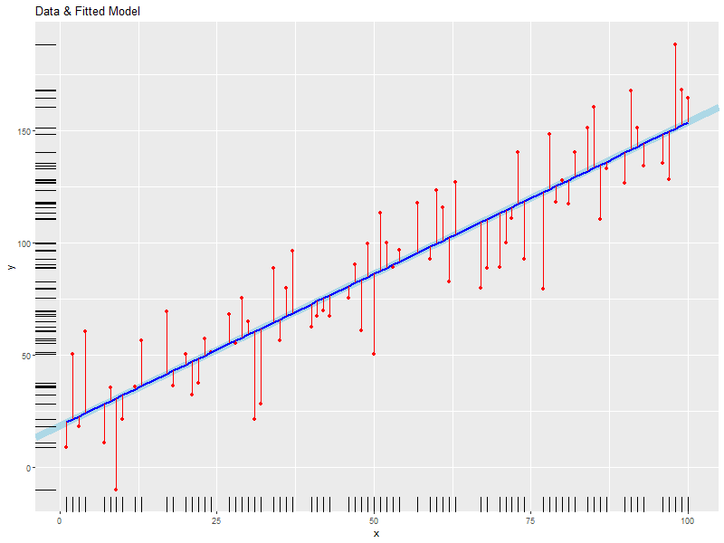
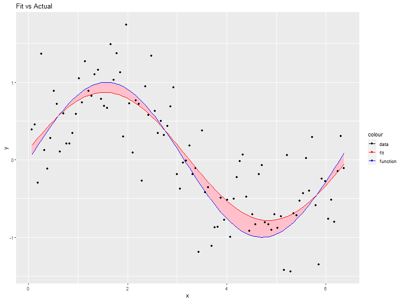

Regression Examples
| Author: | Mitch Richling |
| Updated: | 2021-05-04 |
Copyright 2020 Mitch Richling. All rights reserved.
Table of Contents
1 Source Code and Files
2 Linear
2.1 Example Data
daDat <- data.frame(x=c(1, 2, 3, 4, 7, 8, 9, 10, 12, 13, 17, 18, 20, 21, 22, 23, 24, 27, 28, 29, 30, 31, 32, 34, 35, 36, 37, 40, 41, 42, 43, 46, 47, 48, 49, 50, 51, 52, 53, 54, 57, 59, 60, 61, 62, 63, 67, 68, 70, 71, 72, 73, 74, 77, 78, 79, 80, 81, 82, 84, 85, 86, 87, 90, 91, 92, 93, 96, 97, 98, 99, 100) ) # x-data daDat$f <- 10+daDat$x*1.5 # Function daDat$e <- rnorm(daDat$x, mean=0, sd=15) # Normally distributed errors #### TRY THIS #daDat$e <- runif(daDat$x, min=-40, max=40) # Uniformly distributed errors #### TRY THIS #daDat$e <- runif(daDat$x, min=0, max=80) # Uniformly distributed POSITIVE errors #### TRY THIS daDat$y <- daDat$f + daDat$e # y-data
2.2 Compute the linear model
# x is the independent variable and y being the dependent one. # data= simplifies the formula and makes future use of newdata= in 'predict' calls less painful. daFit <- lm(y ~ x, data=daDat) summary(daFit)
Call:
lm(formula = y ~ x, data = daDat)
Residuals:
Min 1Q Median 3Q Max
-32.792 -10.755 -0.535 8.261 59.349
Coefficients:
Estimate Std. Error t value Pr(>|t|)
(Intercept) 13.28700 3.82551 3.473 0.000886 ***
x 1.42100 0.06505 21.846 < 2e-16 ***
---
Signif. codes: 0 '***' 0.001 '**' 0.01 '*' 0.05 '.' 0.1 ' ' 1
Residual standard error: 16.04 on 70 degrees of freedom
Multiple R-squared: 0.8721, Adjusted R-squared: 0.8703
F-statistic: 477.2 on 1 and 70 DF, p-value: < 2.2e-16
2.3 Plot Model
# plot the data with lines connecting points, draw the fitted line, mark the # data points and fitted points with red dots and connect them with red lines. ggplot(data=daDat, aes(x=x)) + geom_abline(intercept=coef(daFit)[1], slope=coef(daFit)[2], size=3, col='lightblue') + # Fitted LINE geom_point(aes(y=y), col='red') + # Data points geom_line(aes(y=fitted(daFit)), col='blue', size=1) + # Fitted SEGMENT geom_segment(aes(x=x, y=fitted(daFit), xend=x, yend=y), col='red') + # Error Bars labs(title='Data & Fitted Model', x='x', y='y')+ # Labels geom_rug(aes(y=y)) # Rugs for x and y data

2.4 Check our residuals for normally
2.4.1 With the Shpiro-Wilk test
# If p-value<0.1, then we reject the hypothesis that the residuals are normally distributed. # NOTE: residuals(daFit) works on more "fit-like" objects than daFit$residuals shapiro.test(residuals(daFit))
null device
1
Shapiro-Wilk normality test
data: residuals(daFit)
W = 0.97108, p-value = 0.09585
2.4.2 With a Q-Q plot
slope=(quantile(residuals(daFit),p=.75)-quantile(residuals(daFit),.25))/(qnorm(.75)-qnorm(.25)) intercept = quantile(residuals(daFit),.25) - slope*qnorm(.25) ggplot() + geom_point(aes(sample=residuals(daFit)), stat="qq", distribution=qnorm) + # Q-Q plot sf a normal geom_abline(intercept=intercept,slope=slope) # Q-Q plot *LINE* vs a normal
# Clean up temporary variables. rm(slope, intercept)
2.4.3 With a scatter plot (lines at mean, +sd, -sd, 2*sd, * -2*sd) and a histogram
daScat <- ggplot(data=daDat, aes(x=x)) + geom_point(aes(y=residuals(daFit)), col='red') + # Residuals geom_segment(aes(x=x, y=0, xend=x, yend=residuals(daFit)), col='red') + # Residuals Bars labs(x='x', y='Residuals') + # Labels coord_cartesian(ylim = range(1.1*residuals(daFit))) daHist <- ggplot() + geom_histogram(aes(x=residuals(daFit)), col='black', fill='red') + scale_x_continuous(position = "top") + theme(axis.ticks.y=element_blank(), axis.title.y=element_blank() ) + coord_flip(xlim = range(1.1*residuals(daFit))) grid.arrange(daScat, daHist, ncol=2, nrow=1, widths=c(5, 2))
# Clean up temporary variables. rm(daScat, daHist)
2.5 Prediction
2.5.1 Predict model values beyond our x-data
# Compute prediction intervals and confidence over the x-data and a an extended interval beyond the data... newx <- data.frame(x= # Compute new x points seq(from=min(daDat$x), # Start at first data point: x_min to=max(daDat$x)+diff(range(daDat$x)), # End one "range" beyond last: x_max+(x_max-x_min) length.out=100)) # Compute 100 points tmpp <- predict(daFit, newdata=newx, interval="prediction") # Compute prediction intervals tmpc <- predict(daFit, newdata=newx, interval="confidence") # Compute confidence intervals newx <- data.frame(x=newx$x, fit=tmpc[,'fit'], # Put everything in a data.frame plwr=tmpp[,'lwr'], pupr=tmpp[,'upr'], clwr=tmpc[,'lwr'], cupr=tmpc[,'upr'])
2.5.2 Plot our predictions
ggplot() + geom_ribbon(data=newx, aes(x=x, ymin=plwr, ymax=pupr), fill='yellow') + # prediction intervals geom_ribbon(data=newx, aes(x=x, ymin=clwr, ymax=cupr), fill='gold') + # confidence intervals geom_abline(intercept=coef(daFit)[1], slope=coef(daFit)[2], size=3, col='lightblue') + # Fitted LINE geom_line(data=newx, aes(x=x, y=fit), col='red', size=1) + # Prediction SEGMENT geom_line(data=daDat, aes(x=x, y=fitted(daFit)), col='blue', size=1) + # Fitted SEGMENT geom_point(data=daDat, aes(x=x, y=y), col='red') + # Data points geom_segment(data=daDat, aes(x=x, y=fitted(daFit), xend=x, yend=y), col='red') + # Error Bars labs(title='Data & Fitted Model', x='x', y='y')
rm(newx, tmpp, tmpc)
2.6 Cleanup
rm(daDat, daFit)
3 Polynomial Regression
3.1 Example Data
# TRUE => fixed data, FALSE => randomly generated data. if(TRUE) { daDat <- data.frame(x=c( 0.000, 0.444, 0.888, 1.333, 1.777, 2.222, 2.666, 3.111, 3.555, 4.000), f=c( -6.000, -2.208, -0.260, 0.370, 0.211, -0.211, -0.370, 0.260, 2.208, 6.000), e=c( -0.574, -0.193, 1.780, 1.260, 0.850, 1.233, -1.589, -0.039, -1.774, 0.040), y=c( -6.574, -2.401, 1.520, 1.631, 1.061, 1.021, -1.960, 0.220, 0.433, 6.040)) } else { daDat <- data.frame(x=seq(0, 4, length.out=20)) # x-data daDat$f <- with(daDat, x^3-6*x^2+11*x-6) # Function daDat$e <- rnorm(daDat$x) # Error daDat$y <- daDat$f + daDat$e # y-data }
3.2 Compute the polynomial models with progressively higher degree
maxFdeg <- 4 ######## TRY THIS: Value of 6 vs. 4 if(maxFdeg == 4) { ## For illustrative purposes we demonstrate hand coded formulas for the maxFdeg==4 case daFits <- list(lm(y ~ x, data=daDat), # Degree 1 == simple linear regression lm(y ~ x + I(x^2), data=daDat), # Note: The "I" function! lm(y ~ x + I(x^2) + I(x^3), data=daDat), lm(y ~ poly(x, 4, raw=TRUE), data=daDat)) # Shorten the formulas with poly() } else { ## This is how one generic fitting formulas can be constructed daFits <- lapply(1:maxFdeg, function (i) lm(y ~ poly(x, i, raw=TRUE), data=daDat)) } daFits
null device
1
`stat_bin()` using `bins = 30`. Pick better value with `binwidth`.
null device
1
null device
1
[[1]]
Call:
lm(formula = y ~ x, data = daDat)
Coefficients:
(Intercept) x
-3.065 1.582
[[2]]
Call:
lm(formula = y ~ x + I(x^2), data = daDat)
Coefficients:
(Intercept) x I(x^2)
-3.8009 2.8245 -0.3106
[[3]]
Call:
lm(formula = y ~ x + I(x^2) + I(x^3), data = daDat)
Coefficients:
(Intercept) x I(x^2) I(x^3)
-6.971 15.872 -8.907 1.433
[[4]]
Call:
lm(formula = y ~ poly(x, 4, raw = TRUE), data = daDat)
Coefficients:
(Intercept) poly(x, 4, raw = TRUE)1 poly(x, 4, raw = TRUE)2 poly(x, 4, raw = TRUE)3 poly(x, 4, raw = TRUE)4
-6.7171 13.4953 -5.9070 0.2297 0.1504
3.3 Plot Models
# Compute model values at 100 points between the min and max x values newx <- data.frame(x=seq(min(daDat$x), max(daDat$x), length.out=100)) newy <- NULL for(daFitDeg in 1:maxFdeg) newy <- rbind(newy, data.frame(x=newx, degree=rep(daFitDeg, length(newx)), y=predict(daFits[[daFitDeg]], newdata=newx))) newy$degree <- factor(newy$degree)
ggplot() + geom_line(data=newy, aes(x=x, y=y, col=degree)) + geom_line(data=daDat, aes(x=x, y=y), lwd=2)

3.4 Which fit is best?
# Use ANOVA to determine which fit seems best do.call(anova, daFits)
null device
1
Analysis of Variance Table
Model 1: y ~ x
Model 2: y ~ x + I(x^2)
Model 3: y ~ x + I(x^2) + I(x^3)
Model 4: y ~ poly(x, 4, raw = TRUE)
Res.Df RSS Df Sum of Sq F Pr(>F)
1 8 55.775
2 7 53.788 1 1.987 2.2840 0.1911087
3 6 4.917 1 48.871 56.1845 0.0006681 ***
4 5 4.349 1 0.567 0.6523 0.4559873
---
Signif. codes: 0 '***' 0.001 '**' 0.01 '*' 0.05 '.' 0.1 ' ' 1
3.5 Prediction intervals and confidence intervals
newx <- data.frame(x=seq(from=min(daDat$x), to=max(daDat$x)+diff(range(daDat$x))/4, length.out=100)) newy <- NULL for(daFitDeg in 1:maxFdeg) { tmpp <- predict(daFits[[daFitDeg]], newdata=newx, interval="prediction") tmpc <- predict(daFits[[daFitDeg]], newdata=newx, interval="confidence") newy <- rbind(newy, data.frame(x = newx, degree = rep(daFitDeg, length(newx)), fit = tmpp[,'fit'], pLow = tmpp[,'lwr'], pUp = tmpp[,'upr'], cLow = tmpc[,'lwr'], cUp = tmpc[,'upr'])) } newy$degree <- factor(paste('degree', newy$degree))
ggplot(newy, aes(x=x, y=fit, group=degree)) + facet_wrap(~degree, ncol=2) + geom_ribbon(aes(ymin=pLow, ymax=pUp), alpha=.5, fill='pink', col='red') + geom_ribbon(aes(ymin=cLow, ymax=cUp), alpha=.5, fill='red', col='pink') + geom_line()

4 Non-Linear Regression
4.1 Example Data
## Make up some data: y=sin(x)+e where e is random (normal or uniform) numPts <- 100 daDat <- data.frame(x=1:numPts/(numPts/20*pi)) # x-data daDat$f <- sin(daDat$x) # Function daDat$e <- rnorm(daDat$x, mean=0, sd=.5) # Identically distributed Normal Error #daDat$e <- runif(daDat$x, -1, 1) # Identically distributed Uniform Error #daDat$e <- runif(daDat$x, 0, 1) # Identically distributed, but asymmetric, Uniform Error #daDat$e <- daDat$x*rnorm(daDat$x, sd=.5) # Non-Identically distributed Normal Error daDat$y <- daDat$f + daDat$e # y-data
4.2 Compute non-linear model
# Compute the non-linear model # Independent variable of x, dependent variable of y, and function of a*sin(b*x+c)+d daFit <- nls(y~a*sin(b*x+c)+d, # Model formula data=daDat, # data= simplifies the formula argument & future predict calls start=list(a=1,b=1,c=0,d=0) # Initial conditions (we set them to the true model values) ) summary(daFit)
null device
1
Formula: y ~ a * sin(b * x + c) + d
Parameters:
Estimate Std. Error t value Pr(>|t|)
a 0.863418 0.073372 11.768 <2e-16 ***
b 0.879969 0.053552 16.432 <2e-16 ***
c 0.372156 0.199389 1.866 0.065 .
d 0.003063 0.053437 0.057 0.954
---
Signif. codes: 0 '***' 0.001 '**' 0.01 '*' 0.05 '.' 0.1 ' ' 1
Residual standard error: 0.5245 on 96 degrees of freedom
Number of iterations to convergence: 4
Achieved convergence tolerance: 4.165e-06
4.3 Plot Model
# This plot is not terribly useful for the practicing data modeler as one wouldn't be # modeling the data in the first place if the true model from which the data was # generated available! That said, it is an interesting way to explore how pushing # the envelope of the various theoretical requirements impacts the accuracy of the # fit (Try adding one sided, positive errors or non-normal ones). daDat$fit <- fitted(daFit) # Fitted valeus -> a data.frame ggplot(daDat) + geom_ribbon(aes(x=x, ymin=pmin(daDat$f, daDat$fit), ymax=pmax(daDat$f, daDat$fit)), fill='pink') + geom_line(aes(x=x, y=f, col='function')) + # Note: col is an aes! geom_point(aes(x=x, y=y, col='data')) + geom_line(aes(x=x, y=fit, col='fit')) + labs(title='Fit vs Actual', x='x', y='y') + scale_color_manual(values=c("black", "red", "blue"))
